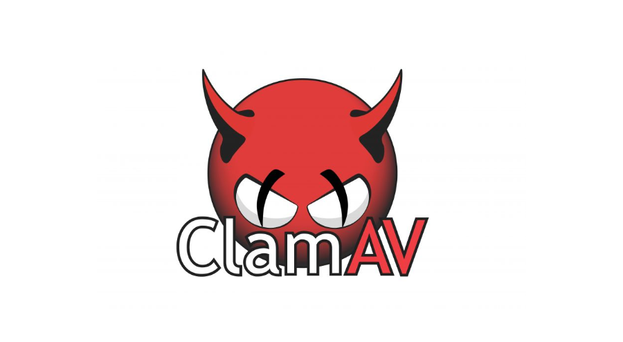
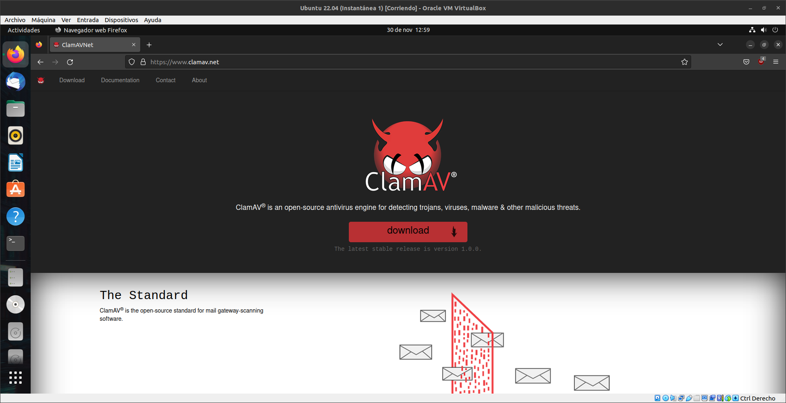
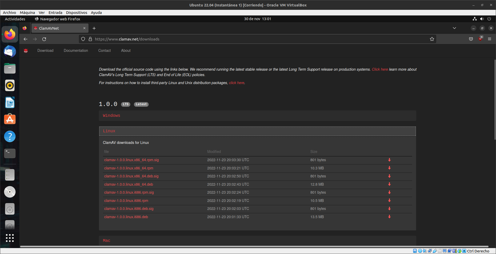
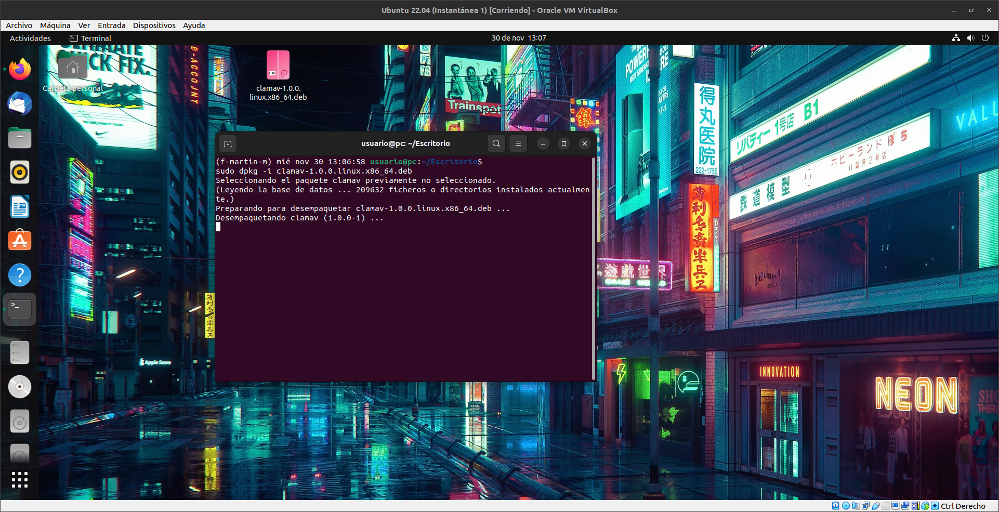
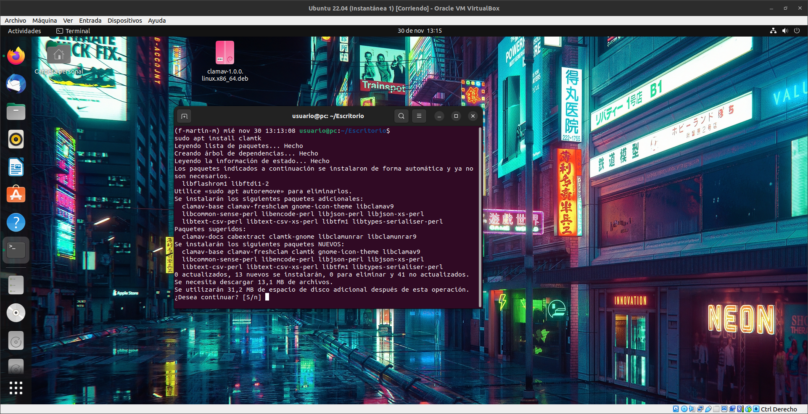
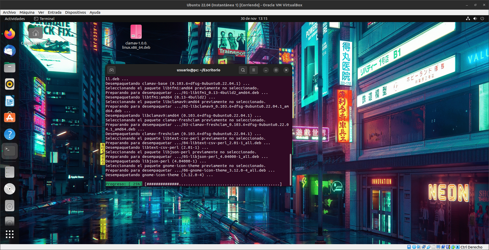
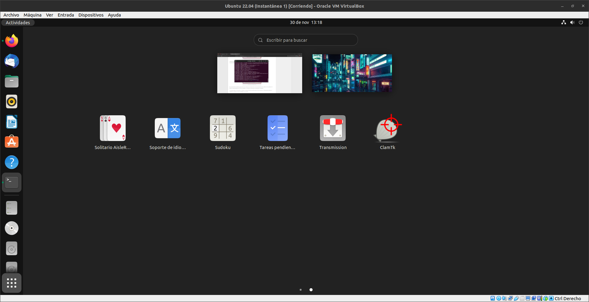
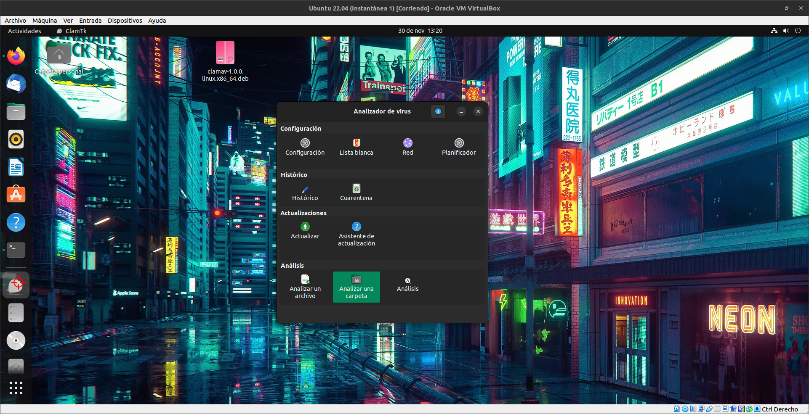
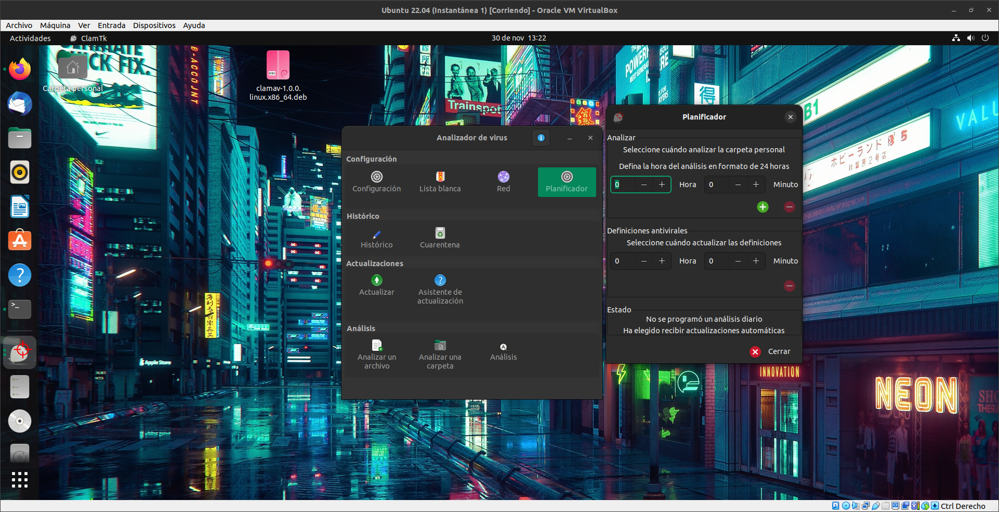
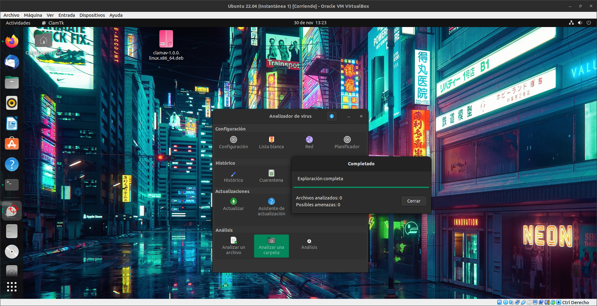

ClamAV

ClamAV es un software antivirus open source (de licencia GPL) para las plataformas Windows,
GNU/Linux, BSD, Solaris, Mac OS X y otros sistemas operativos semejantes a Unix.
El proyecto ClamAv Antivirus fue fundado en el año 2001 por Tomasz Kojm. Actualmente
tiene una implantación superior a los 500 000 servidores en todo el mundo.
ClamAV nació como un proyecto opensource que pretende identificar y bloquear virus en el sistema.

Para descargar ClamAV iremos a la pagina oficial
Y le damos a Doownload

Seleccionamos el tipo de paquete con el que lo vamos a instalar,
vamos a seleccionar el paquete ".deb"

Ahora nos abrimos una terminal donde se haya alojado la descarga del paquete ".deb"
Y escribiremos el siguiente comando para Instalarlo, sudo dpkg -i [nombre_del_archivo].deb

Como este Antivirus no trae interfaz grafica, instalaremos su extension de interfaz grafica
Para instalar su interfaz grafica pondremos el siguiente comando, sudo apt install clamtk

Esperamos a que instale

Ahora buscamos la interfaz grafica ClamTK y la abriremos

Como se puede apreciar tenemos las siguientes funcionalidades:
En la seccion de Analisis tenemos tres tipos:
- Analizar un archivo
- Analizar una carpeta
- Y un Analisis completo del Equipo
En la Seccion Historico:
- Historico: en esta seccion veremos todas las incidencias que han habido en nuetro equipo
- Cuarentena: aqui podremos ver los archivos maliciosos que no se han podido eliminar, pero no afectan al equipo

Con el Planificador podemos programar Analisis de cualquier tipo cada cierto tiempo

Como se puede ver hemos ejecutado un Analisis en una Carpeta y el resultado ha sido positivo.